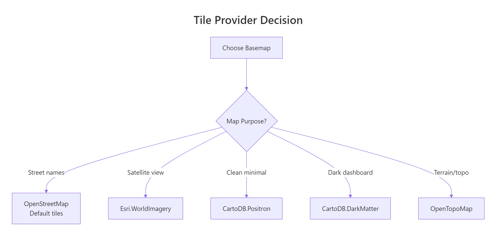
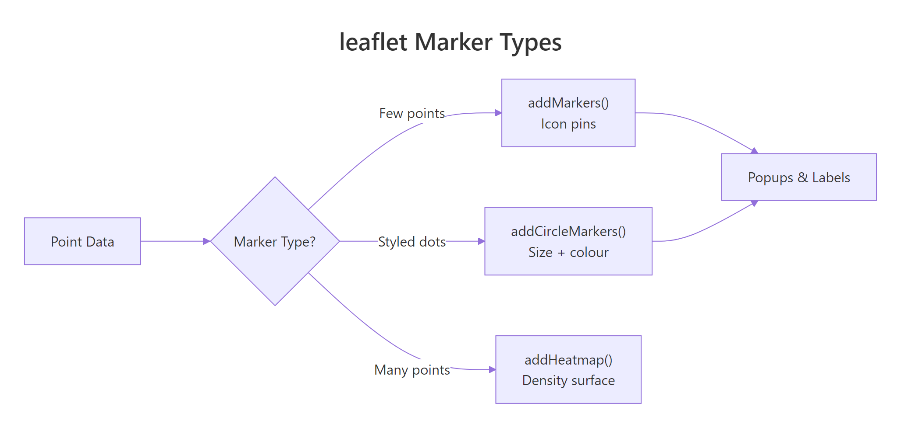
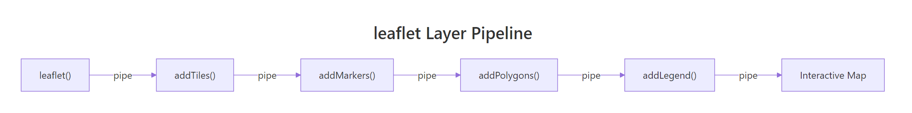

Interactive Maps in R with leaflet: Markers, Popups, Tile Layers, and Heatmaps
leaflet is the most popular R package for creating interactive web maps — you can pan, zoom, click markers, and toggle layers right in the browser, all without writing a single line of JavaScript.
How Do You Create Your First Interactive Map with leaflet?
Every leaflet map starts with three steps: call leaflet(), add a tile layer for the basemap, and set a view centre. The result is a live, zoomable map you can embed in R Markdown, Shiny apps, or standalone HTML pages.
RInteractive R
library(leaflet)
m <- leaflet() |>
addTiles() |>
setView(lng = -0.1276, lat = 51.5074, zoom = 13)
m
#> A leaflet map widget centred on London
#> - Pan by clicking and dragging
#> - Zoom with scroll wheel or +/- buttons
#> - OpenStreetMap tiles load automatically
leaflet() creates an empty map widget. addTiles() layers the default OpenStreetMap basemap on top. setView() centres the camera at longitude/latitude coordinates with a zoom level — lower numbers show more of the world (zoom = 2 shows continents), higher numbers zoom in (zoom = 15 shows individual streets).
Tip
Use fitBounds() when you don't know the right zoom level. Instead of guessing a zoom number, pass the corners of your data's bounding box: fitBounds(lng1, lat1, lng2, lat2). leaflet calculates the perfect zoom automatically.
You can also set the initial view without setView() by passing coordinates directly to leaflet().
RInteractive R
# Alternative: set view in leaflet() itself
leaflet() |>
addTiles() |>
setView(lng = 2.3522, lat = 48.8566, zoom = 12)
#> Map centred on Paris at street-level zoom
Try it: Create a leaflet map centred on your favourite city. Set the zoom level to 12 so you can see the street layout.
RInteractive R
# Try it: create a map of your city
ex_map <- leaflet() |>
addTiles() |>
setView(lng = 0, lat = 0, zoom = 12) # replace with your city's coordinates
ex_map
#> Expected: an interactive map showing your chosen city
Click to reveal solution
RInteractive R
# Example: Tokyo
ex_map <- leaflet() |>
addTiles() |>
setView(lng = 139.6917, lat = 35.6895, zoom = 12)
ex_map
#> Interactive map centred on Tokyo with OpenStreetMap tiles
Explanation: Replace the longitude and latitude with your city's coordinates. You can find coordinates by searching "[city name] coordinates" online.
How Do You Switch Tile Layers (Basemaps)?
Tile layers are the background images that give your map its visual style. OpenStreetMap is the default, but leaflet gives you access to over 100 provider tile sets — satellite imagery, minimalist designs for data dashboards, topographic maps, and dark themes.
RInteractive R
# CartoDB Positron: clean, minimal — great for data overlays
leaflet() |>
addProviderTiles(providers$CartoDB.Positron) |>
setView(lng = -73.9857, lat = 40.7484, zoom = 12)
#> Minimal grey-and-white basemap of Manhattan
#> Labels visible but muted so your data stands out
The providers list contains all available tile sets. Here are the most useful ones and when to reach for each.
RInteractive R
# Satellite imagery: Esri World Imagery
leaflet() |>
addProviderTiles(providers$Esri.WorldImagery) |>
setView(lng = -73.9857, lat = 40.7484, zoom = 14)
#> Aerial/satellite photo of Midtown Manhattan
#> Great for environmental or land-use analysis

Figure 1: Choosing the right tile provider for your map's purpose.
You can let users choose their own basemap by adding a layer control. Stack multiple tile layers as base groups, and leaflet shows radio buttons to toggle between them.
RInteractive R
leaflet() |>
addTiles(group = "Streets") |>
addProviderTiles(providers$CartoDB.Positron, group = "Minimal") |>
addProviderTiles(providers$Esri.WorldImagery, group = "Satellite") |>
addLayersControl(
baseGroups = c("Streets", "Minimal", "Satellite"),
options = layersControlOptions(collapsed = FALSE)
) |>
setView(lng = -0.1276, lat = 51.5074, zoom = 12)
#> Map with a tile-switcher panel in the top-right corner
#> Radio buttons let the user toggle: Streets / Minimal / Satellite
The baseGroups parameter creates radio buttons — only one basemap shows at a time. Setting collapsed = FALSE keeps the control panel visible instead of hidden behind an icon.
Note
Some tile providers require API keys. Mapbox and Thunderforest need a free registration key. CartoDB, OpenStreetMap, and Esri tiles work without any registration.
Try it: Create a map with OpenTopoMap and CartoDB.DarkMatter as two basemap options. Add a layer control to switch between them.
RInteractive R
# Try it: two basemap options with layer control
ex_tiles <- leaflet() |>
addProviderTiles(providers$OpenTopoMap, group = "Topo") |>
# add a second provider tile and layer control
setView(lng = 0, lat = 45, zoom = 6)
ex_tiles
#> Expected: map with a layer switcher for Topo and Dark basemaps
Click to reveal solution
RInteractive R
ex_tiles <- leaflet() |>
addProviderTiles(providers$OpenTopoMap, group = "Topo") |>
addProviderTiles(providers$CartoDB.DarkMatter, group = "Dark") |>
addLayersControl(
baseGroups = c("Topo", "Dark"),
options = layersControlOptions(collapsed = FALSE)
) |>
setView(lng = 0, lat = 45, zoom = 6)
ex_tiles
#> Map with radio buttons to toggle between topographic and dark basemaps
Explanation: Each addProviderTiles() call gets a group name. addLayersControl() uses those names to build the switcher UI.
How Do You Add Markers and Popups to a Map?
Markers pin specific locations on the map. Popups appear when a user clicks a marker — they can contain plain text, formatted HTML, or even images. Labels appear on hover without clicking, giving users a quick preview.
RInteractive R
m_markers <- leaflet() |>
addTiles() |>
addMarkers(lng = -0.1276, lat = 51.5074,
popup = "London, UK",
label = "Hover: London") |>
addMarkers(lng = 2.3522, lat = 48.8566,
popup = "Paris, France",
label = "Hover: Paris") |>
addMarkers(lng = 13.4050, lat = 52.5200,
popup = "Berlin, Germany",
label = "Hover: Berlin")
m_markers
#> Map of Europe with 3 blue pin markers
#> Click a marker → popup with city name
#> Hover over a marker → label appears
Each addMarkers() call places one pin. The popup text appears in a speech-bubble when clicked; the label text appears on hover. You can chain as many markers as you need.
Popups aren't limited to plain text. You can pass HTML for rich formatting — bold text, links, line breaks, even images.
RInteractive R
m_html <- leaflet() |>
addTiles() |>
setView(lng = -0.1276, lat = 51.5074, zoom = 13) |>
addMarkers(
lng = -0.1276, lat = 51.5074,
popup = paste0(
"<b>London</b><br>",
"Population: 8.8 million<br>",
"<a href='https://en.wikipedia.org/wiki/London'>Wikipedia</a>"
)
)
m_html
#> Marker with an HTML popup:
#> London (bold)
#> Population: 8.8 million
#> Clickable Wikipedia link
The paste0() function concatenates HTML strings. Use <b> for bold, <br> for line breaks, and <a href='...'> for clickable links. leaflet renders the HTML inside the popup bubble.
When you have many points, icon markers (the blue pins) slow down the map because each one loads a PNG image. Circle markers are much faster — they render as lightweight SVG circles.
RInteractive R
m_circles <- leaflet() |>
addTiles() |>
setView(lng = 10, lat = 50, zoom = 4) |>
addCircleMarkers(
lng = c(-0.13, 2.35, 13.41, -3.70, 12.50),
lat = c(51.51, 48.86, 52.52, 40.42, 41.90),
radius = 8,
color = "navy",
fillColor = "steelblue",
fillOpacity = 0.7,
popup = c("London", "Paris", "Berlin", "Madrid", "Rome")
)
m_circles
#> Map with 5 blue circle markers across Europe
#> Each circle has a navy border and steelblue fill
#> Click any circle → popup with city name
addCircleMarkers() takes the same popup and label arguments as addMarkers(), plus styling options: radius (in pixels), color (border), fillColor, and fillOpacity (0 = transparent, 1 = solid).

Figure 2: Choosing between marker types based on data density.
Key Insight
Use addCircleMarkers() instead of addMarkers() when you have many points. Circle markers render as SVG elements (fast) while icon markers load individual PNG images (slow at 100+ points). For thousands of points, consider clustering with markerClusterOptions() or a heatmap.
Try it: Add 3 markers for cities you'd like to visit. Each popup should include the city name in bold and the country on a second line.
RInteractive R
# Try it: 3 cities with HTML popups
ex_markers <- leaflet() |>
addTiles() |>
setView(lng = 0, lat = 30, zoom = 3)
# add 3 markers with HTML popups here
ex_markers
#> Expected: 3 markers with bold city name and country in popup
Click to reveal solution
RInteractive R
ex_markers <- leaflet() |>
addTiles() |>
setView(lng = 0, lat = 30, zoom = 3) |>
addMarkers(lng = -43.17, lat = -22.91,
popup = "<b>Rio de Janeiro</b><br>Brazil") |>
addMarkers(lng = 100.50, lat = 13.76,
popup = "<b>Bangkok</b><br>Thailand") |>
addMarkers(lng = 28.98, lat = 41.01,
popup = "<b>Istanbul</b><br>Turkey")
ex_markers
#> Map with 3 markers, each showing bold city + country on click
Explanation:paste0() or direct HTML strings both work. Use <b> for bold and <br> for line breaks inside popups.
How Do You Map Data from a Data Frame?
Real-world mapping means plotting data from a data frame, not typing coordinates by hand. leaflet accepts data frames with longitude and latitude columns — you reference columns using the tilde (~) syntax, similar to formula notation in R.
RInteractive R
cities <- data.frame(
name = c("London", "Paris", "Tokyo", "New York", "Sydney", "Cairo"),
lat = c(51.51, 48.86, 35.69, 40.71, -33.87, 30.04),
lng = c(-0.13, 2.35, 139.69, -74.01, 151.21, 31.24),
population = c(8.8, 2.2, 13.9, 8.3, 5.3, 9.5),
continent = c("Europe", "Europe", "Asia", "Americas", "Oceania", "Africa")
)
leaflet(data = cities) |>
addTiles() |>
addCircleMarkers(
lng = ~lng, lat = ~lat,
radius = ~population,
popup = ~paste0("<b>", name, "</b><br>Pop: ", population, "M"),
label = ~name
)
#> World map with 6 circle markers
#> Marker sizes vary by population (Tokyo largest, Paris smallest)
#> Hover shows city name; click shows name + population
The ~ prefix tells leaflet to look up column names from the data argument. ~lng means "use the lng column," ~population means "use population as the radius." This is leaflet's formula interface — the same pattern R uses in lm() and ggplot2.
Tip
Use the tilde (~) syntax to reference data frame columns. Writing ~lng is equivalent to cities$lng but cleaner inside leaflet pipes. It also means you can pass different data frames to different layers.
To colour markers by a categorical variable, create a colour palette with colorFactor() and pass it to fillColor.
RInteractive R
pal <- colorFactor(
palette = c("red", "blue", "green", "orange", "purple"),
domain = cities$continent
)
leaflet(data = cities) |>
addTiles() |>
addCircleMarkers(
lng = ~lng, lat = ~lat,
radius = ~population * 1.5,
color = "white",
weight = 1,
fillColor = ~pal(continent),
fillOpacity = 0.8,
popup = ~paste0("<b>", name, "</b><br>", continent, "<br>Pop: ", population, "M"),
label = ~name
)
#> World map with 6 coloured circle markers
#> Europe = red, Asia = blue, Americas = green
#> Oceania = orange, Africa = purple
colorFactor() maps categorical values to colours. Its sibling functions handle other data types: colorNumeric() for continuous data, colorBin() for binned ranges, and colorQuantile() for quantile breaks.
Now add a legend so readers can decode the colours without clicking every marker.
RInteractive R
m_legend <- leaflet(data = cities) |>
addTiles() |>
addCircleMarkers(
lng = ~lng, lat = ~lat,
radius = ~population * 1.5,
color = "white", weight = 1,
fillColor = ~pal(continent),
fillOpacity = 0.8,
popup = ~paste0("<b>", name, "</b><br>", continent),
label = ~name
) |>
addLegend(
position = "bottomright",
pal = pal,
values = ~continent,
title = "Continent",
opacity = 1
)
m_legend
#> World map with coloured markers AND a legend box
#> Legend in bottom-right shows: continent → colour mapping
addLegend() reads the same palette function (pal) you used for the markers. Pass values with the same column so the legend entries match. Position options: "topright", "topleft", "bottomright", "bottomleft".
Try it: Add a region column to a data frame and use it as hover labels with the label argument.
RInteractive R
# Try it: add hover labels from a data frame column
ex_cities <- data.frame(
name = c("Seoul", "Mumbai", "Lagos"),
lat = c(37.57, 19.08, 6.52),
lng = c(126.98, 72.88, 3.38),
region = c("East Asia", "South Asia", "West Africa")
)
ex_label_map <- leaflet(data = ex_cities) |>
addTiles() |>
addCircleMarkers(
lng = ~lng, lat = ~lat, radius = 8,
popup = ~name
# add label = ~region here
)
ex_label_map
#> Expected: hover labels show region name for each city
Click to reveal solution
RInteractive R
ex_label_map <- leaflet(data = ex_cities) |>
addTiles() |>
addCircleMarkers(
lng = ~lng, lat = ~lat, radius = 8,
popup = ~name,
label = ~region
)
ex_label_map
#> Hovering over each marker shows the region name
#> Clicking shows the city name in a popup
Explanation: The label argument works just like popup — use ~column_name to reference a data frame column. Labels appear on hover; popups appear on click.
How Do You Draw Polygons and Lines on a Map?
Beyond point markers, leaflet can draw polygons (regions), polylines (routes), rectangles, and circles. These are essential for showing boundaries, coverage areas, or travel paths.
RInteractive R
# Draw a triangle polygon over central London
triangle_lngs <- c(-0.15, -0.10, -0.12, -0.15)
triangle_lats <- c(51.50, 51.50, 51.53, 51.50)
m_poly <- leaflet() |>
addTiles() |>
addPolygons(
lng = triangle_lngs,
lat = triangle_lats,
color = "red",
weight = 2,
fillColor = "orange",
fillOpacity = 0.3,
popup = "Central London zone"
) |>
setView(lng = -0.125, lat = 51.515, zoom = 14)
m_poly
#> Map showing an orange triangle over central London
#> Red border, 30% fill opacity
#> Click the polygon → popup says "Central London zone"
Polygons need a closed path — the last coordinate pair should match the first. The weight parameter controls border thickness, fillOpacity controls how see-through the fill colour is (0 = invisible, 1 = solid).
Polylines draw open paths — useful for showing routes, rivers, or transit lines.
RInteractive R
# Draw a route: London → Paris → Berlin
route_lngs <- c(-0.13, 2.35, 13.41)
route_lats <- c(51.51, 48.86, 52.52)
m_route <- leaflet() |>
addTiles() |>
addPolylines(
lng = route_lngs,
lat = route_lats,
color = "darkblue",
weight = 3,
opacity = 0.8,
popup = "London → Paris → Berlin"
) |>
addCircleMarkers(
lng = route_lngs, lat = route_lats,
radius = 6, color = "darkblue", fillOpacity = 0.9,
label = c("London", "Paris", "Berlin")
)
m_route
#> Blue line connecting London → Paris → Berlin
#> Circle markers at each city with hover labels
You can combine polylines with markers on the same map — each add*() call is a new layer stacked on top of the previous one.
Warning
addCircles() draws geographic circles (radius in metres). addCircleMarkers() draws screen-pixel circles. If you use addCircles(radius = 10), the circle is 10 metres on the ground and changes size as you zoom. addCircleMarkers(radius = 10) is always 10 pixels on screen. Mixing them up gives unexpected sizes at different zoom levels.
Rectangles and circles are useful for marking bounding boxes and coverage areas.
RInteractive R
m_shapes <- leaflet() |>
addTiles() |>
addRectangles(
lng1 = -0.20, lat1 = 51.48,
lng2 = -0.05, lat2 = 51.54,
color = "green", weight = 2,
fillOpacity = 0.1,
popup = "Greater London bounding box"
) |>
addCircles(
lng = -0.1276, lat = 51.5074,
radius = 2000,
color = "purple",
fillOpacity = 0.15,
popup = "2 km radius from city centre"
) |>
setView(lng = -0.13, lat = 51.51, zoom = 13)
m_shapes
#> Green rectangle outlining Greater London bounds
#> Purple circle with 2 km radius from city centre
#> Both shapes are semi-transparent overlays
addRectangles() takes two corner points (lng1/lat1 and lng2/lat2). addCircles() takes a centre point and a radius in metres — this is a geographic circle that scales with zoom.
Try it: Draw a rectangle bounding box around a region of your choice using addRectangles().
RInteractive R
# Try it: draw a bounding box
ex_bbox <- leaflet() |>
addTiles()
# add a rectangle with lng1, lat1, lng2, lat2
# set the view to see the rectangle
ex_bbox
#> Expected: a semi-transparent rectangle over your chosen region
Click to reveal solution
RInteractive R
ex_bbox <- leaflet() |>
addTiles() |>
addRectangles(
lng1 = 12.35, lat1 = 41.85,
lng2 = 12.55, lat2 = 41.95,
color = "blue", fillOpacity = 0.15,
popup = "Rome city centre"
) |>
setView(lng = 12.45, lat = 41.90, zoom = 13)
ex_bbox
#> Blue rectangle overlaying central Rome
Explanation:addRectangles() needs two corner points (southwest and northeast). Use setView() to centre the camera on the rectangle.
How Do You Create a Heatmap with leaflet?
Heatmaps show density patterns — where points cluster together. Instead of plotting individual markers, a heatmap draws a smooth colour gradient from cool (sparse) to hot (dense). The leaflet.extras package adds addHeatmap() to your leaflet toolkit.
RInteractive R
library(leaflet.extras)
# Generate 200 random points around London
set.seed(42)
heat_pts <- data.frame(
lat = rnorm(200, mean = 51.51, sd = 0.02),
lng = rnorm(200, mean = -0.13, sd = 0.03)
)
m_heat <- leaflet(data = heat_pts) |>
addTiles() |>
addHeatmap(
lng = ~lng, lat = ~lat,
blur = 20,
radius = 15
)
m_heat
#> Heatmap over London: warm colours where points cluster
#> Central area glows red/yellow (high density)
#> Edges fade to green/transparent (low density)
addHeatmap() takes the same ~lng and ~lat formula interface as markers. The blur parameter controls how much each point spreads (higher = smoother), and radius sets the influence area of each point in pixels.
Note
leaflet.extras must be installed separately. Run install.packages("leaflet.extras") if you haven't already. It extends leaflet with heatmaps, search boxes, drawing tools, and more.
You can fine-tune the heatmap's colour gradient, intensity scaling, and maximum opacity.
RInteractive R
m_heat2 <- leaflet(data = heat_pts) |>
addProviderTiles(providers$CartoDB.DarkMatter) |>
addHeatmap(
lng = ~lng, lat = ~lat,
blur = 25,
radius = 18,
max = 0.6,
gradient = c("0" = "transparent",
"0.4" = "blue",
"0.65" = "lime",
"1" = "red")
)
m_heat2
#> Heatmap on a dark basemap with custom colours
#> Gradient: transparent → blue → lime → red
#> max = 0.6 boosts contrast for sparse data
The gradient parameter maps intensity values (0 to 1) to colours. The max parameter caps the intensity scale — lower values increase contrast when your data is sparse, making clusters stand out more.
You can also weight points using an intensity column in your data. Points with higher intensity contribute more to the heatmap density.
RInteractive R
# Add intensity based on a "value" column
heat_pts$value <- runif(200, min = 1, max = 10)
leaflet(data = heat_pts) |>
addProviderTiles(providers$CartoDB.Positron) |>
addHeatmap(
lng = ~lng, lat = ~lat,
intensity = ~value,
blur = 20,
radius = 15,
max = 8
)
#> Weighted heatmap: high-value points glow brighter
#> Points with value near 10 contribute more heat
#> Points with value near 1 are barely visible
The intensity parameter accepts any numeric column. This is useful for weighting by population, revenue, event count, or any magnitude you want to visualise geographically.
Try it: Generate 100 random points around a different city and create a heatmap with a custom radius of 20.
RInteractive R
# Try it: heatmap around a different city
set.seed(99)
ex_heat_pts <- data.frame(
lat = rnorm(100, mean = 48.86, sd = 0.02),
lng = rnorm(100, mean = 2.35, sd = 0.03)
)
# create a heatmap with radius = 20
ex_heat <- leaflet(data = ex_heat_pts) |>
addTiles()
# add heatmap here
ex_heat
#> Expected: heatmap showing point density around Paris
Click to reveal solution
RInteractive R
ex_heat <- leaflet(data = ex_heat_pts) |>
addTiles() |>
addHeatmap(lng = ~lng, lat = ~lat, blur = 20, radius = 20)
ex_heat
#> Heatmap centred on Paris with custom radius
#> Clusters visible in the densest areas
Explanation:addHeatmap() uses the same ~lng, ~lat formula syntax as markers. Increase radius to make each point's influence wider.
How Do You Control Layers and Build Interactive Dashboards?
Layer control is what turns a simple map into an interactive dashboard. You assign each layer to a named group, then addLayersControl() builds a panel where users toggle groups on and off. Base groups use radio buttons (pick one), overlay groups use checkboxes (stack many).
RInteractive R
m_dashboard <- leaflet() |>
addTiles(group = "Streets") |>
addProviderTiles(providers$CartoDB.Positron, group = "Minimal") |>
addProviderTiles(providers$Esri.WorldImagery, group = "Satellite") |>
addCircleMarkers(
data = cities,
lng = ~lng, lat = ~lat,
radius = ~population * 1.5,
fillColor = ~pal(continent),
fillOpacity = 0.8,
color = "white", weight = 1,
popup = ~paste0("<b>", name, "</b><br>", continent),
group = "Cities"
) |>
addHeatmap(
data = heat_pts,
lng = ~lng, lat = ~lat,
blur = 20, radius = 15,
group = "Heatmap"
) |>
addLayersControl(
baseGroups = c("Streets", "Minimal", "Satellite"),
overlayGroups = c("Cities", "Heatmap"),
options = layersControlOptions(collapsed = FALSE)
)
m_dashboard
#> Interactive dashboard with:
#> Base layers: Streets / Minimal / Satellite (radio buttons)
#> Overlays: Cities / Heatmap (checkboxes)
#> Users can toggle any combination of overlays
The key is the group parameter. Every add*() function accepts it. Layers with the same group name are toggled together. baseGroups get radio buttons, overlayGroups get checkboxes.

Figure 3: The leaflet pipe-based layer pipeline for building maps.
You can hide layers by default using hideGroup(). This is useful when you have many overlays and don't want to overwhelm the user on first load.
RInteractive R
m_dashboard |>
hideGroup("Heatmap")
#> Same dashboard, but Heatmap layer is hidden on load
#> Users can check the "Heatmap" box to reveal it
hideGroup() takes a group name and unchecks it in the layer control. The layer is still available — users just need to click the checkbox to show it.
Key Insight
Layer groups are the backbone of interactive map dashboards. Name your groups clearly — "Restaurants", "Hotels", "Transit" — because these names appear in the control panel your users see. Meaningful names make the map self-documenting.
For even more control, you can add multiple legends that update with layer visibility.
RInteractive R
m_full <- leaflet(data = cities) |>
addTiles(group = "Streets") |>
addProviderTiles(providers$CartoDB.DarkMatter, group = "Dark") |>
addCircleMarkers(
lng = ~lng, lat = ~lat,
radius = ~population * 1.5,
fillColor = ~pal(continent),
fillOpacity = 0.8,
color = "white", weight = 1,
popup = ~paste0("<b>", name, "</b><br>Pop: ", population, "M"),
label = ~name,
group = "Cities"
) |>
addLegend(
position = "bottomright",
pal = pal, values = ~continent,
title = "Continent"
) |>
addLayersControl(
baseGroups = c("Streets", "Dark"),
overlayGroups = c("Cities"),
options = layersControlOptions(collapsed = FALSE)
)
m_full
#> Dashboard with legend + layer control
#> Dark basemap option for presentation-style maps
#> Legend always visible in bottom-right corner
This pattern — basemap options + data overlays + legend + layer control — is the standard recipe for leaflet dashboards. Each piece snaps together through the pipe operator.
Try it: Create a map with two overlay groups — one for circle markers and one for rectangles — and a layer control to toggle each.
RInteractive R
# Try it: two overlay groups with layer control
ex_layers <- leaflet() |>
addTiles() |>
setView(lng = -0.13, lat = 51.51, zoom = 12)
# add circle markers with group = "Points"
# add a rectangle with group = "Zone"
# add layer control with overlayGroups
ex_layers
#> Expected: map with checkboxes to toggle Points and Zone layers
Click to reveal solution
RInteractive R
ex_layers <- leaflet() |>
addTiles() |>
setView(lng = -0.13, lat = 51.51, zoom = 12) |>
addCircleMarkers(
lng = c(-0.12, -0.14, -0.11),
lat = c(51.51, 51.52, 51.50),
radius = 8, color = "blue", group = "Points"
) |>
addRectangles(
lng1 = -0.16, lat1 = 51.49,
lng2 = -0.09, lat2 = 51.53,
color = "red", fillOpacity = 0.1, group = "Zone"
) |>
addLayersControl(
overlayGroups = c("Points", "Zone"),
options = layersControlOptions(collapsed = FALSE)
)
ex_layers
#> Map with checkboxes for "Points" and "Zone"
#> Uncheck either to hide that layer
Explanation: The group parameter in each add*() call assigns layers to named groups. addLayersControl() reads those group names to build the checkbox panel.
Practice Exercises
Exercise 1: European Capitals Dashboard
Build a map of 5 European capitals with circle markers sized by population and coloured by region (Western/Eastern Europe). Add HTML popups showing city name, population, and region. Include a colour legend and a layer control to switch between street and satellite basemaps.
RInteractive R
# Exercise 1: European Capitals Dashboard
# Hint: create a data frame, use colorFactor() for region colours,
# add baseGroups for tile layers and an overlayGroup for markers
# Data:
# London (51.51, -0.13, pop 8.8M, Western)
# Paris (48.86, 2.35, pop 2.2M, Western)
# Warsaw (52.23, 21.01, pop 1.8M, Eastern)
# Prague (50.08, 14.44, pop 1.3M, Eastern)
# Rome (41.90, 12.50, pop 2.9M, Western)
# Write your code below:
Click to reveal solution
RInteractive R
eu_cities <- data.frame(
name = c("London", "Paris", "Warsaw", "Prague", "Rome"),
lat = c(51.51, 48.86, 52.23, 50.08, 41.90),
lng = c(-0.13, 2.35, 21.01, 14.44, 12.50),
pop = c(8.8, 2.2, 1.8, 1.3, 2.9),
region = c("Western", "Western", "Eastern", "Eastern", "Western")
)
eu_pal <- colorFactor(c("steelblue", "tomato"), domain = eu_cities$region)
leaflet(data = eu_cities) |>
addTiles(group = "Streets") |>
addProviderTiles(providers$Esri.WorldImagery, group = "Satellite") |>
addCircleMarkers(
lng = ~lng, lat = ~lat,
radius = ~pop * 2,
fillColor = ~eu_pal(region),
fillOpacity = 0.8,
color = "white", weight = 1,
popup = ~paste0("<b>", name, "</b><br>Pop: ", pop, "M<br>Region: ", region),
group = "Capitals"
) |>
addLegend(position = "bottomright", pal = eu_pal,
values = ~region, title = "Region") |>
addLayersControl(
baseGroups = c("Streets", "Satellite"),
overlayGroups = "Capitals",
options = layersControlOptions(collapsed = FALSE)
)
#> name pop region colour
#> London 8.8 Western steelblue (largest circle)
#> Paris 2.2 Western steelblue
#> Warsaw 1.8 Eastern tomato
#> Prague 1.3 Eastern tomato (smallest circle)
#> Rome 2.9 Western steelblue
Explanation:colorFactor() maps "Western"/"Eastern" to colours. The radius = ~pop * 2 scales circle size by population. addLayersControl() provides radio buttons for basemaps and a checkbox for the marker overlay.
Exercise 2: Multi-Layer Dashboard with Heatmap
Create a dashboard-style map with 3 basemap options (Streets, Minimal, Dark), a heatmap of 150 random points around New York, a rectangle overlay marking Manhattan, and full layer control. Hide the heatmap by default.
RInteractive R
# Exercise 2: NYC Dashboard with heatmap + polygon overlay
# Hint: New York coords: lat 40.71, lng -74.01
# Manhattan bounding box: roughly lng -74.02 to -73.97, lat 40.70 to 40.80
# Use hideGroup() to hide the heatmap on load
# Write your code below:
Click to reveal solution
RInteractive R
set.seed(123)
nyc_pts <- data.frame(
lat = rnorm(150, mean = 40.71, sd = 0.03),
lng = rnorm(150, mean = -74.01, sd = 0.02)
)
leaflet() |>
addTiles(group = "Streets") |>
addProviderTiles(providers$CartoDB.Positron, group = "Minimal") |>
addProviderTiles(providers$CartoDB.DarkMatter, group = "Dark") |>
addHeatmap(
data = nyc_pts, lng = ~lng, lat = ~lat,
blur = 20, radius = 15,
group = "Heatmap"
) |>
addRectangles(
lng1 = -74.02, lat1 = 40.70,
lng2 = -73.97, lat2 = 40.80,
color = "green", weight = 2, fillOpacity = 0.1,
popup = "Manhattan",
group = "Manhattan Zone"
) |>
addLayersControl(
baseGroups = c("Streets", "Minimal", "Dark"),
overlayGroups = c("Heatmap", "Manhattan Zone"),
options = layersControlOptions(collapsed = FALSE)
) |>
hideGroup("Heatmap") |>
setView(lng = -74.01, lat = 40.75, zoom = 12)
#> NYC dashboard with 3 basemap options
#> Manhattan rectangle visible by default
#> Heatmap hidden — check the box to reveal it
Explanation:hideGroup("Heatmap") unchecks the heatmap overlay on load. Users can still enable it via the checkbox. Three basemap options use radio buttons.
Exercise 3: Store Location Explorer
Generate 30 random store locations in central Paris (lat ~48.86, lng ~2.35). Assign each store a random type ("Cafe", "Bakery", "Bookshop"). Colour circle markers by type, add popups with the store name and type, and create a legend. Add a heatmap of all store locations as a separate toggleable layer.
RInteractive R
# Exercise 3: Paris Store Explorer
# Hint: use colorFactor() for store type colours
# Generate names with paste0("Store_", 1:30)
# Create both a markers layer and a heatmap layer
# Write your code below:
Click to reveal solution
RInteractive R
set.seed(77)
stores <- data.frame(
name = paste0("Store_", 1:30),
lat = rnorm(30, mean = 48.86, sd = 0.015),
lng = rnorm(30, mean = 2.35, sd = 0.02),
type = sample(c("Cafe", "Bakery", "Bookshop"), 30, replace = TRUE)
)
store_pal <- colorFactor(c("brown", "gold", "navy"), domain = stores$type)
leaflet(data = stores) |>
addProviderTiles(providers$CartoDB.Positron) |>
addCircleMarkers(
lng = ~lng, lat = ~lat, radius = 7,
fillColor = ~store_pal(type), fillOpacity = 0.8,
color = "white", weight = 1,
popup = ~paste0("<b>", name, "</b><br>Type: ", type),
group = "Stores"
) |>
addHeatmap(
lng = ~lng, lat = ~lat,
blur = 20, radius = 18,
group = "Density"
) |>
addLegend(position = "bottomright", pal = store_pal,
values = ~type, title = "Store Type") |>
addLayersControl(
overlayGroups = c("Stores", "Density"),
options = layersControlOptions(collapsed = FALSE)
) |>
hideGroup("Density")
#> Paris store map with 30 coloured markers
#> Brown = Cafe, Gold = Bakery, Navy = Bookshop
#> Toggle "Density" checkbox to see heatmap layer
Explanation:colorFactor() maps three store types to colours. Both the circle markers and heatmap use the same data but belong to different groups, so users can toggle them independently.
Putting It All Together
Let's build a complete "World City Explorer" — a polished interactive dashboard combining everything from this tutorial. This map features 10 cities with population-sized markers, continent colours, HTML popups, a heatmap layer, multiple basemaps, a legend, and full layer control.
RInteractive R
# World City Explorer — complete interactive dashboard
world_cities <- data.frame(
name = c("London", "Paris", "Tokyo", "New York", "Sydney",
"Cairo", "Mumbai", "São Paulo", "Toronto", "Seoul"),
lat = c(51.51, 48.86, 35.69, 40.71, -33.87,
30.04, 19.08, -23.55, 43.65, 37.57),
lng = c(-0.13, 2.35, 139.69, -74.01, 151.21,
31.24, 72.88, -46.63, -79.38, 126.98),
pop = c(8.8, 2.2, 13.9, 8.3, 5.3,
9.5, 20.4, 12.3, 2.9, 9.8),
continent = c("Europe", "Europe", "Asia", "Americas", "Oceania",
"Africa", "Asia", "Americas", "Americas", "Asia")
)
# Colour palette for continents
city_pal <- colorFactor(
palette = c("firebrick", "steelblue", "forestgreen", "darkorange", "mediumpurple"),
domain = c("Africa", "Americas", "Asia", "Europe", "Oceania")
)
# Build the dashboard
m_explorer <- leaflet(data = world_cities) |>
# Basemap options
addTiles(group = "Streets") |>
addProviderTiles(providers$CartoDB.Positron, group = "Minimal") |>
addProviderTiles(providers$CartoDB.DarkMatter, group = "Dark") |>
# City markers: sized by population, coloured by continent
addCircleMarkers(
lng = ~lng, lat = ~lat,
radius = ~sqrt(pop) * 3,
fillColor = ~city_pal(continent),
fillOpacity = 0.8,
color = "white", weight = 1.5,
popup = ~paste0(
"<b style='font-size:14px'>", name, "</b><br>",
"<b>Continent:</b> ", continent, "<br>",
"<b>Population:</b> ", pop, " million<br>",
"<b>Coordinates:</b> ", round(lat, 2), ", ", round(lng, 2)
),
label = ~paste0(name, " (", pop, "M)"),
group = "Cities"
) |>
# Heatmap of population density (weighted by population)
addHeatmap(
lng = ~lng, lat = ~lat,
intensity = ~pop,
blur = 30, radius = 25, max = 15,
group = "Population Heatmap"
) |>
# Legend
addLegend(
position = "bottomright",
pal = city_pal,
values = ~continent,
title = "Continent",
opacity = 1
) |>
# Layer control
addLayersControl(
baseGroups = c("Streets", "Minimal", "Dark"),
overlayGroups = c("Cities", "Population Heatmap"),
options = layersControlOptions(collapsed = FALSE)
) |>
hideGroup("Population Heatmap") |>
setView(lng = 20, lat = 25, zoom = 2)
m_explorer
#> World City Explorer dashboard:
#> 10 cities with population-sized circle markers
#> Colours: Africa=red, Americas=blue, Asia=green, Europe=orange, Oceania=purple
#> HTML popups with name, continent, population, and coordinates
#> Hover labels show "City (PopM)"
#> Toggle: Streets / Minimal / Dark basemap
#> Toggle: Cities overlay (on) / Population Heatmap (off by default)
#> Legend in bottom-right corner
This dashboard uses every major leaflet feature: tile provider selection, circle markers with data-driven styling, HTML popups, hover labels, a population-weighted heatmap, colour legends, and a full layer control with hidden-by-default layers. The sqrt(pop) * 3 formula prevents the largest cities from dominating the map — square root scaling compresses the range while preserving relative differences.
Summary
Here's a quick reference table of every leaflet function covered in this tutorial.
Function
Purpose
Key Parameters
leaflet()
Create empty map widget
data (data frame or sf object)
addTiles()
Add default OpenStreetMap tiles
group
addProviderTiles()
Add third-party basemap tiles
providers$Name, group
setView()
Set map centre and zoom
lng, lat, zoom
fitBounds()
Auto-zoom to data extent
lng1, lat1, lng2, lat2
addMarkers()
Add icon pin markers
lng, lat, popup, label
addCircleMarkers()
Add SVG circle markers
radius, color, fillColor, fillOpacity
addPopups()
Add standalone popups
lng, lat, popup (text/HTML)
addPolygons()
Draw filled polygon regions
lng, lat, color, fillOpacity
addPolylines()
Draw line paths
lng, lat, color, weight
addRectangles()
Draw rectangles
lng1, lat1, lng2, lat2
addCircles()
Draw geographic circles
lng, lat, radius (metres)
addHeatmap()
Draw density heatmap
lng, lat, intensity, blur, radius
addLegend()
Add colour legend
pal, values, position, title
addLayersControl()
Add layer toggle panel
baseGroups, overlayGroups
hideGroup()
Hide a layer by default
group name
colorFactor()
Map categories to colours
palette, domain
colorNumeric()
Map continuous values to colours
palette, domain
colorBin()
Map binned ranges to colours
palette, domain, bins
References
Cheng, J., Karambelkar, B., Xie, Y. — leaflet: Create Interactive Web Maps with the JavaScript 'Leaflet' Library. CRAN. Link